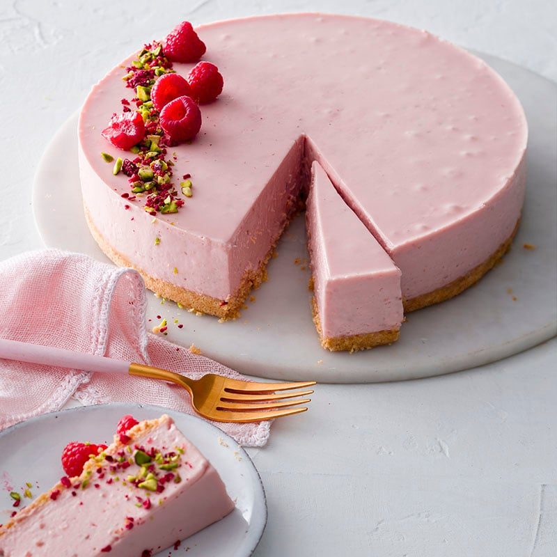
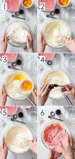
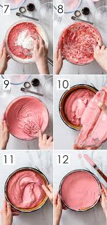

Healthy Peppermint Cheesecake

Ingredients
Chocolate Base:
- 2 cups Walnuts
- 1 cup Dates
- ¼ cup Unsweetened Natural Cocoa Powder
- ¼ tsp Salt
Cheesecake Filling:
- 2 cups Walnuts
- 3 oz Organic Raw Cacao Butter (melted)
- two 13.5oz cans Let’s Do Organic Heavy Coconut Cream
- 3 tbs Beet Juice (from canned beets)
- 2 tsp Vanilla Paste
- 2 tsp Liquid Stevia Extract
- 2 tsp Peppermint Flavor
- ⅛ tsp Salt
Instructions
For the Chocolate Base:
- In a food processor or high-speed blender (I used my Vitamix), add the walnuts and dates. Grind until it comes together and yields a moist crumble.
- Add the cocoa powder and salt and grind again. It’s ready when you can pinch it together and it stays together in a “dough.”
- Press the mixture into a 9” springform pan.
For the Cheesecake Filling:
- In a food processor or high-speed blender, add the walnuts and melted cacao butter. Blend until smooth.
- Add the coconut cream, beet juice, vanilla paste, stevia extract, peppermint flavor, and salt. Blend until completely smooth.
- Pour over the crust. Tap the pan on the counter a few times to remove any air pockets. Refrigerate overnight.
- Slice, serve, and enjoy!

